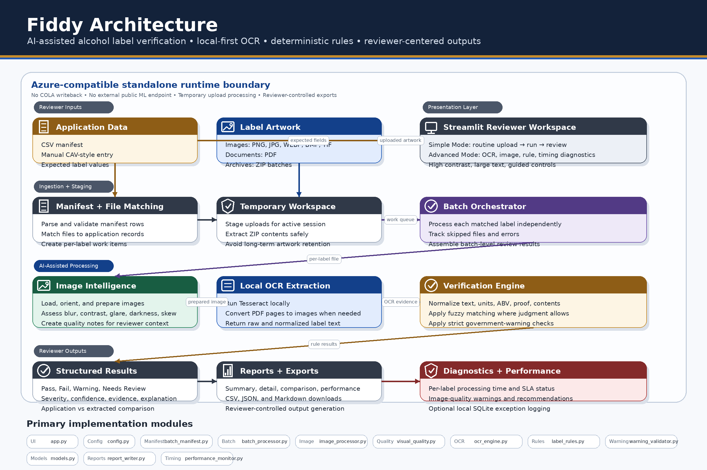

Architecture¶
Fiddy is organized as a local-first verification pipeline. The application separates the reviewer interface, upload handling, manifest parsing, OCR, image-quality analysis, deterministic rule evaluation, batch processing, reporting, performance monitoring, accessibility validation, and Azure-compatible deployment boundary.
Architecture Diagram¶

Runtime Boundary¶
┌──────────────────────────────────────────────────────────────────────────────┐
│ AZURE-COMPATIBLE RUNTIME BOUNDARY │
├──────────────────────────────────────────────────────────────────────────────┤
│ Local OCR and deterministic rule execution │
│ No external machine-learning endpoint dependency │
│ Standalone operation without direct COLA writeback │
│ Temporary upload handling during the active review session │
│ Reports generated only through reviewer-initiated downloads │
└──────────────────────────────────────────────────────────────────────────────┘
Major Components¶
| Component | Responsibility |
|---|---|
app.py |
Streamlit interface, workflow routing, uploads, reviewer controls, results display, and downloads. |
config.py |
Centralized settings for OCR, upload limits, reports, performance targets, accessibility, and deployment posture. |
booger.py |
Sanitized local exception logging. |
src/batch_manifest.py |
Manifest parsing, validation, and conversion into application records. |
src/batch_processor.py |
Batch orchestration, file matching, per-label isolation, and acceptance evidence. |
src/image_processor.py |
Image loading, orientation correction, preprocessing, downscaling, and conservative deskew. |
src/visual_quality.py |
Blur, contrast, glare, darkness, skew, size, and readability diagnostics. |
src/ocr_engine.py |
Local OCR extraction from image and PDF label files. |
src/label_field_extractor.py |
Field extraction from OCR text. |
src/normalizer.py |
Text, number, unit, ABV, proof, and warning-text normalization. |
src/label_rules.py |
Deterministic comparison rules and fuzzy matching. |
src/warning_validator.py |
Government-warning validation. |
src/label_verifier.py |
Single-label verification orchestration. |
src/performance_monitor.py |
Per-label timing, SLA tracking, and performance acceptance metrics. |
src/report_writer.py |
CSV, JSON, Markdown, summary, and detail report generation. |
src/acceptance_checker.py |
Stakeholder acceptance-status evaluation. |
src/accessibility_checklist.py |
Manual accessibility validation checklist. |
Component Map¶

Deployment Boundary¶
Fiddy is designed to run as a standalone local-OCR workload. The Azure container includes Python, Streamlit, Tesseract OCR, and Poppler. The application does not require an external OCR service or external machine-learning endpoint.
Demonstration Assets¶
Demonstration files are organized as:
samples/
├── labels/
└── manifests/
Use samples/labels for label artwork and samples/manifests for CSV manifests.